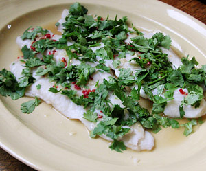

Pangasius an Limettensauce
4,5 von 6für die sauce limettensaft, fischsauce feingehackter knoblauch und chilli vermischen. etwas palmzucker dazu.
den fisch am stück mit einem dampfgareinsatz in einer pfanne ca. 10 min dämpfen. die sauce darüber giessen und mit viel frischem koriander servieren.
